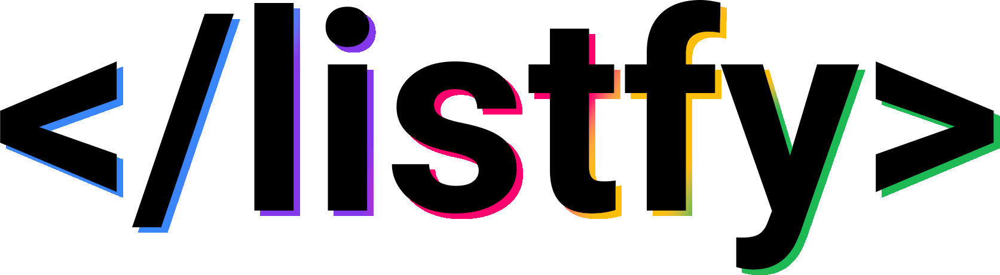

Sobre o Listfy

Listfy é uma aplicação web que te ajuda a organizar seus trabalhos e tarefas nos estudos de maneira prática, fácil, direto ao ponto e com o mínimo de bugs.
Alunos integrantes da equipe
André de Oliveira Brandão
Breno Rosa Almeida
Gabriel Victor Couto Martins de Paula
João Gabriel Amorim Pádua
Professores responsáveis
Roberto Felipe Dias Ferreira Da Rocha
Rommel Vieira Carneiro
Will Ricardo Dos Santos Machado
Languages and Tools:
Instruções de utilização:
Assim que a primeira versão do sistema estiver disponível, deverá complementar com as instruções de utilização. Descreva como instalar eventuais dependências e como executar a aplicação.